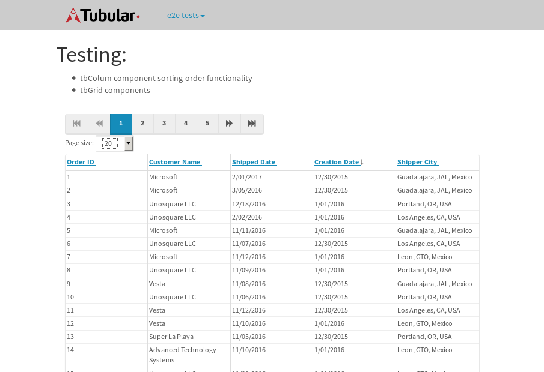

tbColumn.Grid Sorting - 177.69sTests: 5Skipped: 0Failures: 3 should sort data in ascending order then on descending order when sorting by Order Id column - 44.335sExpected '1' to be '500'.✗Expected '20' to be '481'.✗Tests passed: 50.00%should order data in ascending order when click-sorting an unsorted text column - 23.302sTests passed: 100.00%should order data in descending order when click-sorting an ascending-sorted text column - 43.395sExpected 'Advanced Technology Systems' to be 'Vesta'.✗Tests passed: 0.00%should order data in ascending order when click-sorting an unsorted date column - 23.368sTests passed: 100.00%should order data in descending order when click-sorting twice an unsorted date column - 43.28sExpected '12/30/2015' to match /1\/01\/2016/.✗Tests passed: 0.00%
tbEmptyForm - 10.991sTests: 3Skipped: 0Failures: 0 should have an empty required field - 9.347sTests passed: 100.00%should not be able to click on save - 0.044sTests passed: 100.00%should load default value for numeric field - 0.041sTests passed: 100.00%
Tubular Filters.tbColumnFilter - 99.235sTests: 12Skipped: 0Failures: 0 should cancel filtering when clicking outside filter-popover - 8.025sTests passed: 100.00%should disable Value text-input for "None" filter - 5.792sTests passed: 100.00%should disable apply button for "None" filter - 5.805sTests passed: 100.00%should decorate popover button when showing data is being filtered for its column - 11.305sTests passed: 100.00%should correctly filter data for the "Equals" filtering option - 7.862sTests passed: 100.00%should correctly filter data for the "Not Equals" filtering option - 8.096sTests passed: 100.00%should correctly filter data for the "Contains" filtering option - 7.909sTests passed: 100.00%should correctly filter data for the "Not Contains" filtering option - 7.655sTests passed: 100.00%should correctly filter data for the "Starts With" filtering option - 5.901sTests passed: 100.00%should correctly filter data for the "Not Starts With" filtering option - 5.948sTests passed: 100.00%should correctly filter data for the "Ends With" filtering option - 7.754sTests passed: 100.00%should correctly filter data for the "Not Ends With" filtering option - 6.02sTests passed: 100.00%
Tubular Filters.tbColumnDateTimeFilter - 125.638sTests: 12Skipped: 0Failures: 0 should cancel filtering when clicking outside filter-popover - 6.614sTests passed: 100.00%should disable Value text-input for "None" filter - 5.769sTests passed: 100.00%should disable apply button for "None" filter - 5.975sTests passed: 100.00%should clear filtering when clicking on Clean button - 16.758sTests passed: 100.00%should decorate popover button when showing data is being filtered for its column - 11.136sTests passed: 100.00%should correctly filter data for the "Equals" filtering option - 6.532sTests passed: 100.00%should correctly filter data for the "Not Equals" filtering option - 6.462sTests passed: 100.00%should correctly filter data for the "Between" filtering option - 11.162sTests passed: 100.00%should correctly filter data for the "Greater-or-equal" filtering option - 11.102sTests passed: 100.00%should correctly filter data for the "Greater" filtering option - 11.042sTests passed: 100.00%should correctly filter data for the "Less-or-equal" filtering option - 10.846sTests passed: 100.00%should correctly filter data for the "Less" filtering option - 10.868sTests passed: 100.00%
Tubular Filters.tbColumnOptionsFilter - 79.111sTests: 3Skipped: 0Failures: 0 should cancel filtering when clicking outside filter-popover - 7.813sTests passed: 100.00%should decorate popover button when showing data is being filtered for its column - 10.777sTests passed: 100.00%should filter column-elements in accordance to the selected filter when selecting a single option - 48.52sTests passed: 100.00%
Tubular Filters.tbTextSearch - 44.572sTests: 5Skipped: 0Failures: 0 min-chars is not set - 0.092sTests passed: 100.00%should filter data in searchable-column customer name to matching inputted text, starting from 3 characters - 5.961sTests passed: 100.00%should filter data in searchable-column shipper city to matching inputted text, starting from 3 characters - 11.566sTests passed: 100.00%should show clear button when there is inputted text only - 5.788sTests passed: 100.00%should clear filtering when clicking clear button - 15.44sTests passed: 100.00%
tbForm related components.tbCheckboxField - 6.586sTests: 2Skipped: 0Failures: 0 should save changes on "SAVE" - 3.333sTests passed: 100.00%should discard changes on "CANCEL" - 1.681sTests passed: 100.00%
tbForm related components.tbDropDownEditor - 7.38sTests: 5Skipped: 0Failures: 0 should set initial input value to the value of "value" attribute when defined - 0.882sTests passed: 100.00%should show the component name value in a label field when "showLabel" attribute is true - 0.844sTests passed: 100.00%should show a help field equal to this attribute, is present - 0.864sTests passed: 100.00%should submit modifications to item/server when clicking form "Save" - 2.82sTests passed: 100.00%should NOT submit modifications to item/server when clicking form "Cancel" - 1.315sTests passed: 100.00%
tbForm related components.tbTextArea - 10.109sTests: 7Skipped: 0Failures: 0 should set initial input value to the value of "value" attribute when defined - 0.843sTests passed: 100.00%should be invalidated when the number of chars is not in the range of "min" and "max" attributes - 1.316sTests passed: 100.00%should show the component name value in a label field when "showLabel" attribute is true - 0.836sTests passed: 100.00%should show a help field equal to this attribute, is present - 1.149sTests passed: 100.00%should require the field when the attribute "required" is true - 1.081sTests passed: 100.00%should submit modifications to item/server when clicking form "Save" - 2.698sTests passed: 100.00%should NOT submit modifications to item/server when clicking form "Cancel" - 1.259sTests passed: 100.00%
tbForm related components.tbDateEditor - 9.338sTests: 6Skipped: 0Failures: 0 should set initial date value to the value of "value" attribute when defined - 0.999sTests passed: 100.00%should be invalidated when the date is not in the range of "min" and "max" attributes - 1.867sTests passed: 100.00%should show the component name value in a label field when "showLabel" attribute is true - 0.962sTests passed: 100.00%should show a help field equal to this attribute, is present - 0.796sTests passed: 100.00%should submit modifications to item/server when clicking form "Save" - 1.724sTests passed: 100.00%should NOT submit modifications to item/server when clicking form "Cancel" - 2.157sTests passed: 100.00%
tbForm related components.tbTypeaheadEditor - 14.157sTests: 7Skipped: 0Failures: 0 should show an options list when there is an API-info/component entered-data - 3.659sTests passed: 100.00%should select the option clicked - 1.572sTests passed: 100.00%should show a "delete" button when an option/match is selected, and delete the option if button is clicked - 1.63sTests passed: 100.00%should show a label value equal to the component name when "showLabel" attribute is true - 0.985sTests passed: 100.00%should require a value when "require" attribute is true - 1.366sTests passed: 100.00%should submit modifications to item/server when clicking form "Save" - 2.547sTests passed: 100.00%should NOT submit modifications to item/server when clicking form "Cancel" - 1.294sTests passed: 100.00%
tbForm related components.tbSimpleEditor - 10.726sTests: 9Skipped: 0Failures: 0 should set initial input value to the value of "value" attribute when defined - 0.701sTests passed: 100.00%should be invalidated when the number of chars is not in the range of "min" and "max" attributes - 1.155sTests passed: 100.00%should show the component name value in a label field when "showLabel" attribute is true - 0.751sTests passed: 100.00%should set input placeholder to the value of "placeholder" attribute - 0.93sTests passed: 100.00%should validate the control using the "regex" attribute, if present - 1.148sTests passed: 100.00%should show a help field equal to this attribute, is present - 0.774sTests passed: 100.00%should require the field when the attribute "required" is true - 1.009sTests passed: 100.00%should submit modifications to item/server when clicking form "Save" - 2.44sTests passed: 100.00%should NOT submit modifications to item/server when clicking form "Cancel" - 1.147sTests passed: 100.00%
tbForm related components.tbNumericEditor - 10.816sTests: 7Skipped: 0Failures: 0 should set initial component value to the value of "value" attribute when defined - 0.883sTests passed: 100.00%should be invalidated when the entered number is not in the range of "min" and "max" attributes - 1.373sTests passed: 100.00%should show the component name value in a label field when "showLabel" attribute is true - 0.957sTests passed: 100.00%should show a help field equal to this attribute, is present - 0.912sTests passed: 100.00%should require the field when the attribute "required" is true - 1.049sTests passed: 100.00%should submit modifications to item/server when clicking form "Save" - 3.256sTests passed: 100.00%should NOT submit modifications to item/server when clicking form "Cancel" - 1.461sTests passed: 100.00%
tbForm Connection Error NoModelKey - 2.244sTests: 1Skipped: 0Failures: 0 tbForm connection error functionality - 0.006sTests passed: 100.00%
tbForm Connection Error NoServerUrl - 2.322sTests: 1Skipped: 0Failures: 0 tbForm connection error functionality - 0.002sTests passed: 100.00%
tbGridComponents - 28.756sTests: 6Skipped: 0Failures: 1 should add item with newRow method - 3.244sTests passed: 100.00%should add item with newRow method and cancel action - 0.329sTests passed: 100.00%should update item with tbSaveButton - 1.434sTests passed: 100.00%should NOT update item on cancel Update action - 1.127sTests passed: 100.00%should remove item with tbRemoveButton - 20.53sExpected 17 not to be 17, 'should remove the row from the table'.✗Tests passed: 50.00%should NOT remove item on cancel Remove action - 0.665sTests passed: 100.00%
tbGridPager.navigation buttons - 2.403sTests: 1Skipped: 0Failures: 0 should perform no action when clicking on the numbered navigation button corresponding to the current-showing results page - 0.611sTests passed: 100.00%
tbGridPager.navigation buttons.first/non-last results page related functionality - 0.684sTests: 2Skipped: 0Failures: 0 should disable "first" and "previous" navigation buttons when in first results page - 0.109sTests passed: 100.00%should enable "last" and "next" navigation buttons when in a results page other than last - 0.575sTests passed: 100.00%
tbGridPager.navigation buttons.last/non-first results page related functionality - 1.107sTests: 2Skipped: 0Failures: 0 should disable "last" and "next" navigation buttons when in last results page - 0.565sTests passed: 100.00%should enable "first" and "previous" navigation buttons when in a results page other than first - 0.541sTests passed: 100.00%
tbGridPager.page navigation - 3.568sTests: 5Skipped: 0Failures: 0 should go to next results page when clicking on next navigation button - 1.008sTests passed: 100.00%should go to previous results page when clicking on previous navigation button - 0.987sTests passed: 100.00%should go to last results page when clicking on last navigation button - 0.544sTests passed: 100.00%should go to first results page when clicking on first navigation button - 0.537sTests passed: 100.00%should go to corresponding results page when clicking on a numbered navigation button - 0.492sTests passed: 100.00%
tbGridPagerInfo - 4.182sTests: 2Skipped: 0Failures: 0 should show text in accordance to numbered of filter rows and current results-page - 1.748sTests passed: 100.00%should show count in footer - 0.023sTests passed: 100.00%
tbPageSizeSelctor - 12.324sTests: 4Skipped: 0Failures: 0 should filter up to 10 data rows per page when selecting a page size of "10" - 2.565sTests passed: 100.00%should filter up to 20 data rows per page when selecting a page size of "20" - 2.404sTests passed: 100.00%should filter up to 50 data rows per page when selecting a page size of "50" - 2.601sTests passed: 100.00%should filter up to 100 data rows per page when selecting a page size of "100" - 3.288sTests passed: 100.00%
tbSingleForm - 13.017sTests: 8Skipped: 1Failures: 1 should load correct info - 0.001s***Skipped***Tests passed: 0%should change customer name - 1.787sTests passed: 100.00%should save it - 2.155sExpected '' to be 'Saved'.✗Tests passed: 50.00%should clear the inputs - 1.823sTests passed: 100.00%should update - 1.906sTests passed: 100.00%should reset editor - 1.77sTests passed: 100.00%should not save if not Changes - 1.712sTests passed: 100.00%should not be able to click on save - 1.862sTests passed: 100.00%


{kind=link}